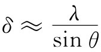

你们知道，电子显微镜能够“看见”光学显微镜所无法看到的非常微小的物体。我们曾在第1卷第30章中讨论过由于透镜孔径的衍射给任何光学系统带来的基本限制。如果透镜孔径对源点所张角度为2θ（见图29-8），若在源处的两相邻的圆点的间距比

要小，则不能把它们看成分开的点，式中λ为光的波长。用最优良的光学显微镜，设θ趋近90°的理论极限，因而δ约等于λ，即约为5000Å。
图29-8 显微镜的分辨本领受从源点对向的角所限制
对于电子显微镜来说这同一限制也应该适用，不过这里的波长——对于50kV的电子——约为0.05Å。假如人们能够采用一个接近30°的孔径，就应该能看到相距只有0.2Å的两物体。由于分子中原子的典型间距为1或2Å，所以我们就能拍得分子的照片。生物学会变得较为容易，我们将拥有关于脱氧核糖核酸结构的照片，那将是多么重大的一件事情呵！当前分子生物学领域中大多数研究工作就是企图弄清楚复杂有机分子的形状。但愿我们能够看到这些分子！
可惜，迄今在电子显微镜中能够获得的最高分辨本领还只是接近20Å。原因是，还没有人能够设计出一种具有大孔径的透镜。所有一切透镜都带有“球面像差”，那意味着与轴成大角度的射线与近轴射线有不同的聚焦点，如图29-9所示。通过特殊技术，光学显微镜的透镜可以造得忽略掉球面像差，但迄今还没有人能制成避免球面像差的电子透镜。
图29-9 透镜的球面像差
事实上，人们能够证明，我们曾经描述过的任何静电透镜或磁透镜一定会有不可能消除的球面像差。这一像差——和衍射在一起——把电子显微镜的分辨本领限制在目前的大小。
我们所提及的那种限制不适用于非轴对称的或在时间上不是恒定的那些电场和磁场。也许有朝一日有人会想出一种新型的电子透镜，它能够克服简单电子透镜所固有的像差，那时我们将能直接为原子们拍照了。也许会有一天，化学中的化合物将能够通过考察原子位置而不是通过观察某些沉淀物的颜色来加以分析！